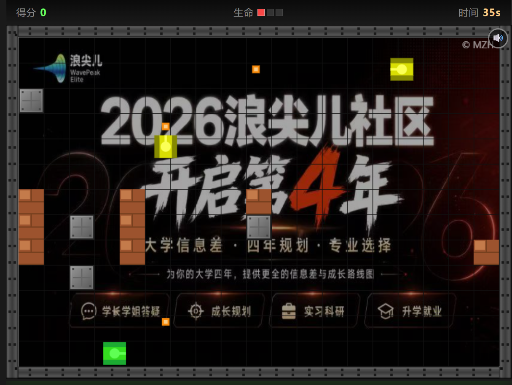
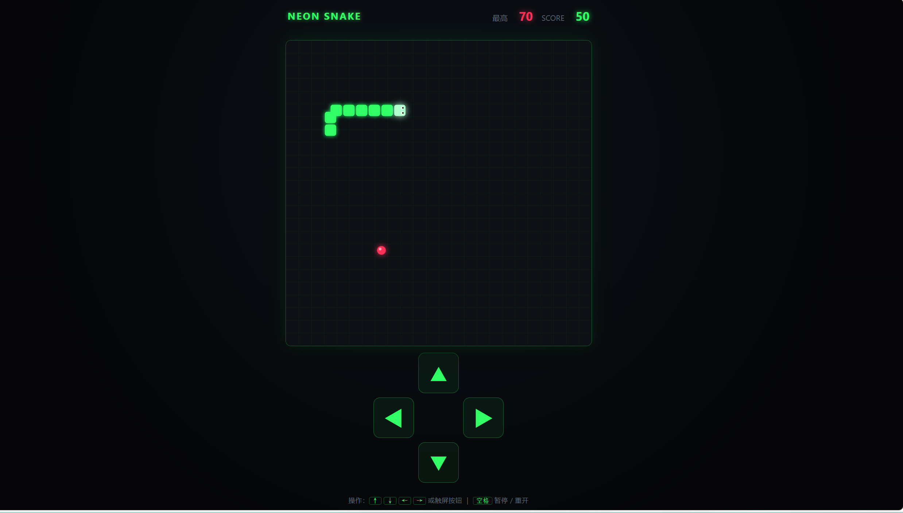
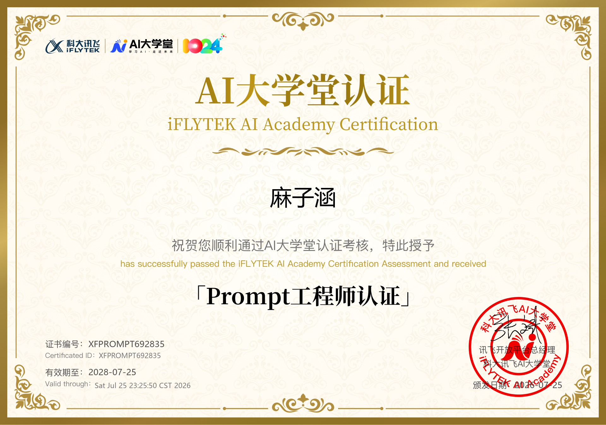
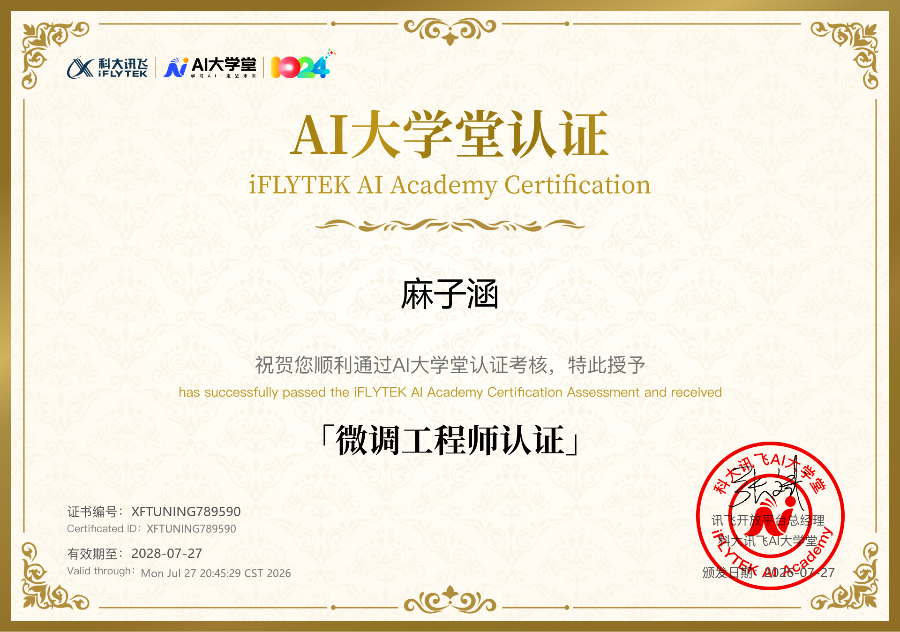
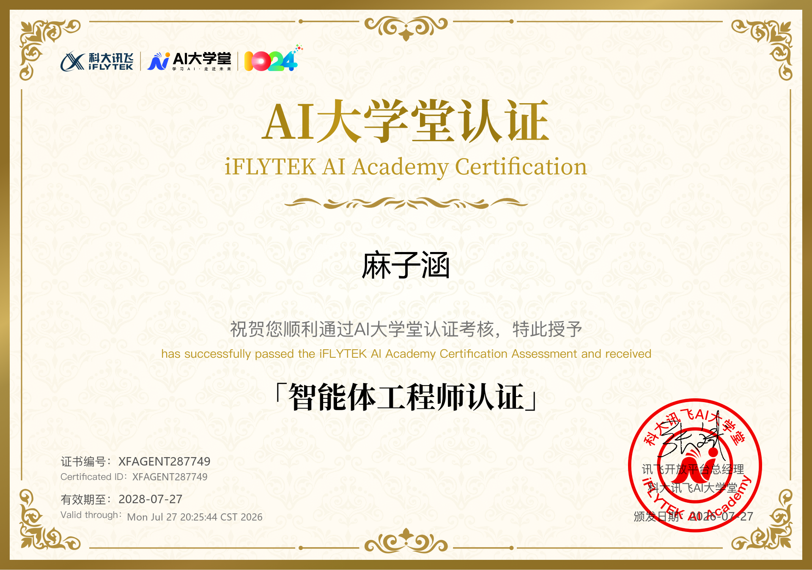
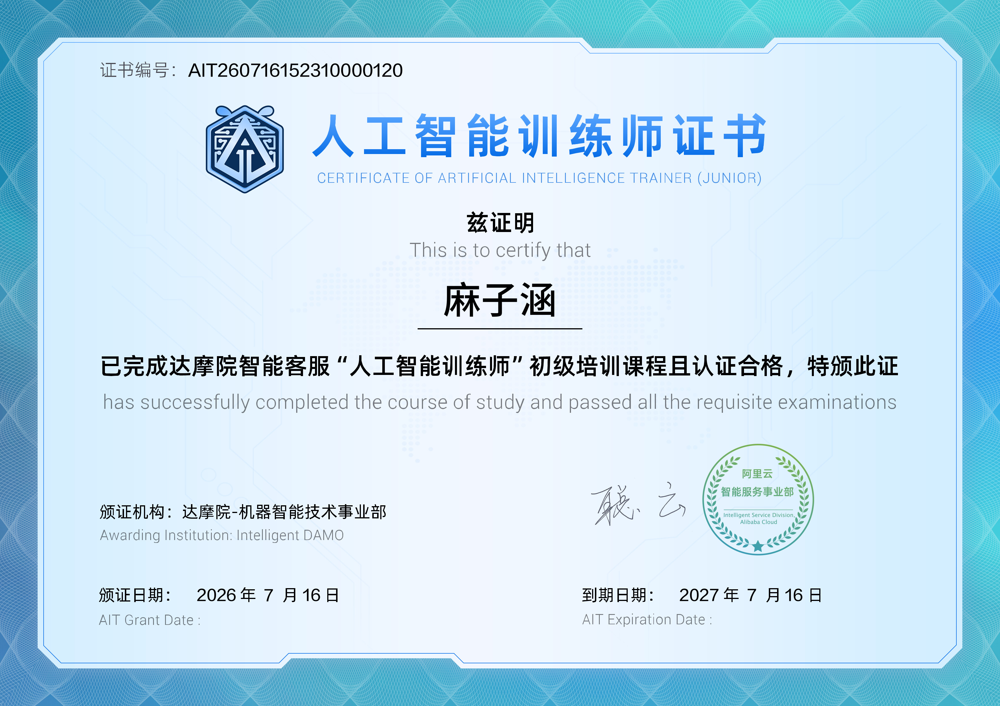
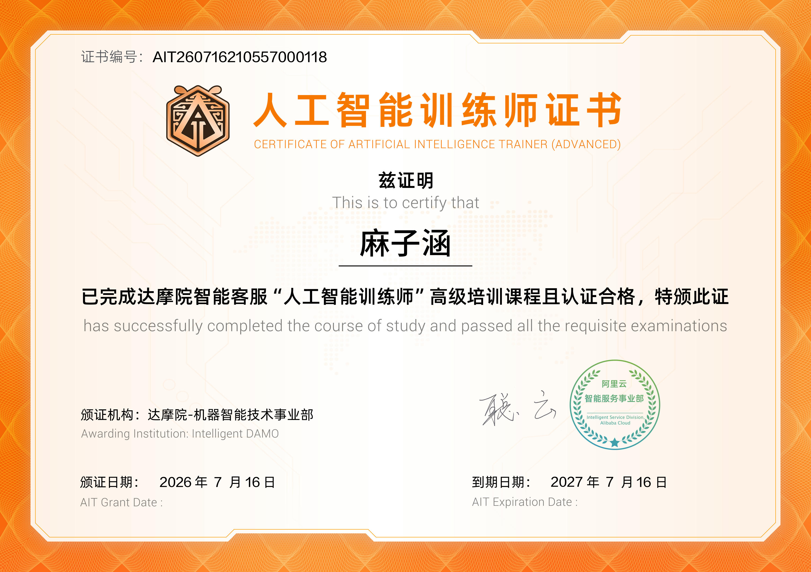

麻 子 涵
桂林电子科技大学 · 光电信息材料与工程
专注于 Prompt 工程、大模型微调与智能体构建，以 AI 技术驱动实际价值
你好，我是麻子涵，一名热爱人工智能技术探索的在校大学生。 我专注于Prompt 工程、大模型微调（LoRA）和智能体构建， 持有讯飞 Prompt 工程师、微调工程师、智能体工程师、阿里云通义灵码 Clouder，及人工智能训练师（初级／高级）共六项专业认证。
我相信 AI 是这个时代最具变革力的技术，致力于将先进的 AI 能力与实际场景结合， 创造有价值的解决方案。技术探索之余也热爱编程与开源，熟练使用 C 语言、Linux/Git 等工具， 持续在技术道路上精进前行。
精通 LLM 提示词设计，掌握 CoT、ToT 等高级策略，擅长构建高质量 Prompt 模板
熟悉 LoRA/QLoRA 微调技术，能独立完成大模型指令微调与领域适配
具备 Agent 开发能力，能构建多 Agent 协作系统，实现复杂任务自动化
熟练使用 LangChain 构建 RAG 系统与链式调用，掌握 Hugging Face 模型库调用
扎实的 C 语言基础，理解底层内存管理与指针操作，具备系统级编程思维
熟悉 Linux 系统管理与 Shell 脚本，掌握 Git 版本控制与团队协作流程
阿里云 AI 编程助手认证，熟练使用智能编码工具提升开发效率与代码质量
基于原生 JavaScript 与 Canvas 2D 独立完成游戏引擎开发（含完整游戏循环、AABB 碰撞检测及实时渲染管线），代码总量逾 600 行，实现 零依赖、开箱即玩 的 Web 游戏体验，页面加载即可进入，无需任何额外配置。

设计 简单 / 普通 / 困难 三档难度，通过参数化配置控制敌人移速 0.8～1.2 px/帧、射击间隔 45～120 帧动态调节及生成密度；为敌方坦克构建独立 行为状态机，支持随机转向、边界反弹与自适应射击， AI 复杂度随难度梯次提升，显著增强可复玩性。
基于 Web Audio API 合成所有游戏音效： 使用 方波振荡器 生成射击音效 （800 → 200 Hz 扫频）， 低频方波 + 白噪声混合合成爆炸音效（100 → 40 Hz 轰鸣 + 低通滤波），音量分层设计（射击 0.14 / 爆炸 0.55）， 无需外部音频文件即可实现沉浸式听觉反馈。
每帧动态生成 15～20 个橙黄渐变碎片， 配合 径向渐变光圈（半径 4 → 48 px 缓动扩散）与拖尾轨迹，叠加 屏幕震动效果（3～6 px 随机偏移，持续 10 帧）， 有效强化打击感与视觉冲击力。
设计完整交互体系： WASD / 方向键 双操控、 空格键 射击、 实时 HUD 面板（分数 / 生命 / 关卡）、 三档难度下拉选择器、 音效开关切换器； 页面加载即玩，零配置启动，全面优化用户可访问性与操作流畅度。
独立实现完整游戏引擎： requestAnimationFrame 驱动的主循环， 稳定 60FPS 逻辑-渲染分离； 自研 AABB 碰撞检测 覆盖坦克 × 墙体 / 子弹 × 坦克等全部场景； 瓦片地图（Tilemap）数据驱动场景构建， 渲染管线分层绘制（地图 → 墙体 → 坦克 → 子弹 → HUD）， 保证视觉层次清晰且性能恒定。
基于原生 JavaScript 与 Canvas 2D 独立完成游戏引擎开发（含完整游戏循环、AABB 碰撞检测 及实时渲染管线），代码总量逾 400 行，实现 零依赖、开箱即玩 的 Web 游戏体验，桌面/移动端均无缝游玩。

设计动态难度系统：蛇移动速度随得分 分阶段提升 （每 +10 分 增加 0.2 格/秒， 上限 16 格/秒）， 无需手动切换难度即可实现渐进式挑战， 优化玩家心流体验，保持短局挑战时长与成就感的平衡。
实现基于 localStorage 的本地最高分持久化存储， 关闭浏览器后再次打开依然保留历史最佳成绩， 进入游戏即自动加载并显示在 HUD 面板， 每局结束时实时比对并刷新「历史最佳」， 显著增强游戏粘性与重复挑战动机。
基于 Web Audio API 合成轻量级音效反馈：
吃食物（高频短音）、转向（短促 click）、
游戏结束（低频下扫尾音）共三类交互音效；
用户首次按键时自动解锁音频 AudioContext，
兼顾沉浸感与浏览器自动播放策略兼容性，零外部音频资源。
同时支持 键盘方向键 + 空格
（桌面端）与 触屏十字按钮（移动端）双操控；
视口适配自动缩放画布尺寸、按钮可点区域 ≥ 44×44 px；
触摸事件使用 touchstart/touchend 即时响应，
消除移动端 300ms 延迟，桌面与移动端皆能无门槛游玩。
独立实现完整游戏引擎： requestAnimationFrame 驱动主循环， 基于 固定时间步长 的逻辑更新，与渲染解耦； 自研 AABB 碰撞检测 覆盖 食物 × 蛇头 / 边界 × 蛇身 / 蛇身 × 自身； 食物生成保持「随机格 + 避开蛇身」闭环； 渲染管线分层（霓虹网格 → 食物 → 蛇身 → HUD），性能恒定。

专业认证
专业认证
专业认证
职业技能
职业技能光电信息材料与工程专业 · 本科
无论是 AI 技术交流、项目合作还是学术探讨，欢迎随时与我取得联系。
期待与志同道合的伙伴共同探索人工智能的无限可能。